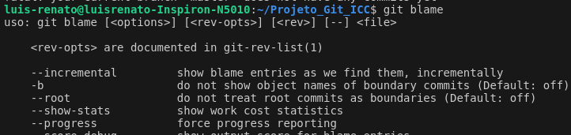

Git e GitHub. O que são?
GitHub
GitHub é uma plataforma de hospedagem de código-fonte baseada na web que utiliza o sistema de controle de versão Git. Lançado em 2008, o GitHub oferece uma variedade de recursos para desenvolvedores e equipes de desenvolvimento colaborarem em projetos de software de forma eficiente.
Git
Git é um sistema de controle de versão distribuído, amplamente utilizado para o gerenciamento de projetos de software e outras formas de desenvolvimento colaborativo. Desenvolvido inicialmente por Linus Torvalds em 2005 para gerenciar o desenvolvimento do kernel do Linux, o Git se tornou um dos sistemas de controle de versão mais populares e amplamente adotados.
Comandos Git
- init: Inicializa um repositório Git em um diretório local.
- clone: Clona um repositório Git existente para o seu diretório local.
- branch: Lista, cria ou exclui branches (ramos) no repositório.
- checkout: Alterna entre branches ou restaura arquivos para um determinado estado.
- status: Exibe o status atual do repositório, mostrando quais arquivos foram modificados, adicionados ou removidos.
- diff: Mostra as diferenças entre arquivos modificados no diretório de trabalho e a versão no repositório.
- add:Adiciona arquivos modificados ou novos ao índice (staging area) para serem incluídos no próximo commit.
- commit: Salva as alterações adicionadas ao índice como um novo commit no histórico do repositório.
- push: Envia commits locais para um repositório remoto.
- pull: Atualiza o repositório local com as alterações do repositório remoto.
- revert: Desfaz um commit específico, criando um novo commit que reverte as alterações.

- merge: Combina as alterações de diferentes branches em um único branch.
- stash: Salva temporariamente as alterações não confirmadas para aplicá-las posteriormente.
- rm: Remove arquivos do repositório Git e do sistema de arquivos.

- config: Configura opções do Git, como nome de usuário, email e configurações globais.
- reset: Restaura o estado de um arquivo para um commit específico.
- remote: Gerencia repositórios remotos.
- fetch: Obtém commits e dados de um repositório remoto para o repositório local.
- show: Exibe informações sobre objetos Git, como commits, tags e branches.
- help: Exibe informações de ajuda para um comando específico do Git.
- rebase: Move ou combina commits de um branch para outro.
- blame: Mostra quem modificou cada linha de um arquivo e em qual commit.

- tag: Adiciona, lista ou verifica tags (rótulos) em commits específicos no histórico do repositório.
Links para acessar o vídeo e o áudio:
link para acessar o audio: audio.html
link para o vídeo: video.html
Tabela do G6 do brasileirão 2023
| clube |
pontos |
vitórias |
derrotas |
empates |
| porco |
70 |
20 |
8 |
10 |
| mosqueteiro |
68 |
21 |
12 |
5 |
| Galo |
66 |
19 |
10 |
9 |
| urubu |
66 |
19 |
10 |
9 |
| biriba |
64 |
18 |
10 |
10 |
| toro loko |
62 |
17 |
10 |
11 |